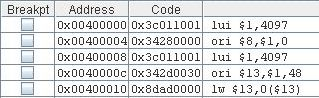
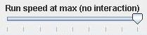

MARS Features
This is the overview feature description
MARS features:
-
GUI with point-and-click control and integrated editor. The three icons shown here denote "run", "single-step", and "single-step backwards."
-
Integrated editor, featuring multiple file-editing tabs, context-sensitive input, and color-coded assembly syntax. All assembly files in a directory (folder) may be assembled into a single executable.
-
Easy set/removal of breakpoints using check boxes 
-
Easily editable register and memory values, similar to a speadsheet
-
Display values in hexadecimal or decimal
-
Command line mode for instructors to test and evaluate many programs easily. Command-line arguments to specify registers and memory locations to be displayed after the program run, to examine for correct contents. Set up a "batch" to do many programs in succession.
-
Floating point registers, coprocessor1 and coprocessor0
-
Variable-speed execution 
-
"Tool" utility for MIPS control of simulated devices (new in 2.1). A tool is a program running on a separate thread with access to MARS data. An assembly program can run in MARS and interact with the tool through memory-mapped IO. Any imaginable pseudo-device can be interfaced to MIPS assembly code, or extended to physical devices or hardware.